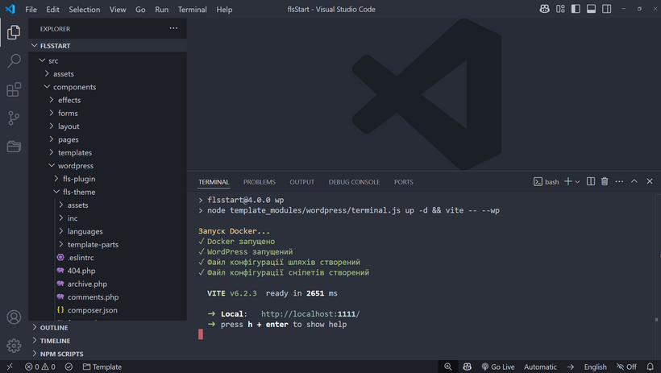

Стартовий шаблон "Чертоги Фрілансера" 4 (ЧФ4) оснащений можливостями які дозволяють з легкістю розробляти інтерфейс відразу з інтеграцією на CMS WordPress
Для того щоб мати можливість працювати з повноційним сервером на своєму ПК, необхідно встановити систему Docker (вона безкоштовна для власного використання)
Після встановлення, Docker має бути просто увімкнений, без необхидності робити з ним щось ще.
Для початку роботи, після встановлення ЧФ4 та Docker, виконайте команду npm run wp
При першому запуску, система створить папку backend куди запише папку database з базою даних та папку wordpress з CMS
WordPress. Не редагуйте папку backend та її вміст без чіткого розуміння своїх дій.
Дaлі система відкриє браузер з адресою http://localhost:8080/ та запропонує встановлення CMS WordPress на ваш
новостворений сервер. Після інсталяції CMS все готово для розробки.
Якщо ви запускаєте систему вже не вперше, то після команди npm run wp відкриється браузер з адресою серверу CMS WordPress http://localhost:8080/ - головною сторінкою сайту.
Увага! Docker має бути запущений перед виконанням команди npm run wp
Для того щоб почати розробку, перейдіть у src/components/wordpress. Тут ви знайдете папку fls-theme. Це папка вже встановленої теми на вашу CMS WordPress і вам достатньо просто редагувати файли згідно задачі.

Редагування стилів відбувається в src/styles та і відповідних компонентах src/components
Редагування скриптів, в режимі розробника, відбувається у відповідних компонентах src/components та у файлі
src/components/wordpress/fls-theme/assets/app.js, у випадку коли потрібно написати власну загальну логіку. Не видаляте
підключення функціоналу import '../fls-wp-includes.js', це необхідно для коректної роботи.
Файл src/components/wordpress/fls-theme/assets/app.js, після збірки проєкту, вже не підключається. JS/CSS код збирається
у відповідні файли в папці src/components/wordpress/fls-theme/assets/build
Також, після збірки, існує можливість внести правки у файли
/wp-content/themes/fls-theme/assets/build/css/custom.css та
/wp-content/themes/fls-theme/assets/build/js/custom.js
Увага! Не редагуйте інші JS-файли які знаходяться в src/components/wordpress
Також, у src/components/wordpress доступна папка fls-plugin для створення власного плагіну
Після завершення роботи на сайтом, виконайте команду npm run wpbuild, після цього, за допомогою плагіна WordPress для
переносу сайту, який треба встановити самостійно, створіть дамп сайту та бази даних для подальшого переносу на
віддалений сервер.
Через те що після виконання команд npm run wp та npm run wpbuild запускається Docker сервер, його варто зупиняти в момент перерви у розробці або її завершення. Для цього виконуйте команду npm run wpstop